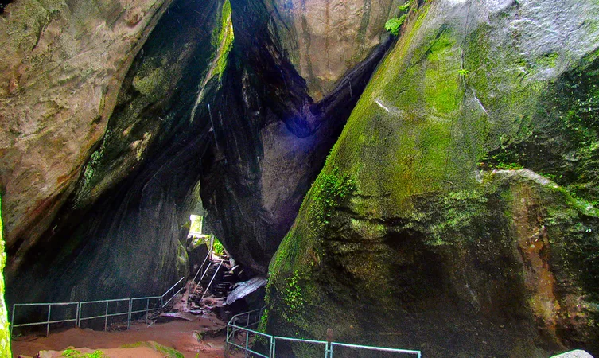

Banasura Sagar Dam, Chembra Peak, Kuruva Island, Edakkal Caves, Chain Tree, Pookode Lake, Tholpetty Wildlife Sanctuary, The Bamboo Factory, Wayanad Wildlife Sanctuary, Soochipara Falls, Phantom Rock, Neelimala View Point and many more.
While a lot of you are searching for places to visit in Wayanad, let’s make this easier for you with our amazing list. Loaded with charming waterfalls, caves, resorts, and homestays, this prominent town is renowned for its zest ranches and natural life. Among the prettiest territories of Kerala, Wayanad has a large number of alternatives for its guests.

Banasura Sagar Dam

Edakkal Caves